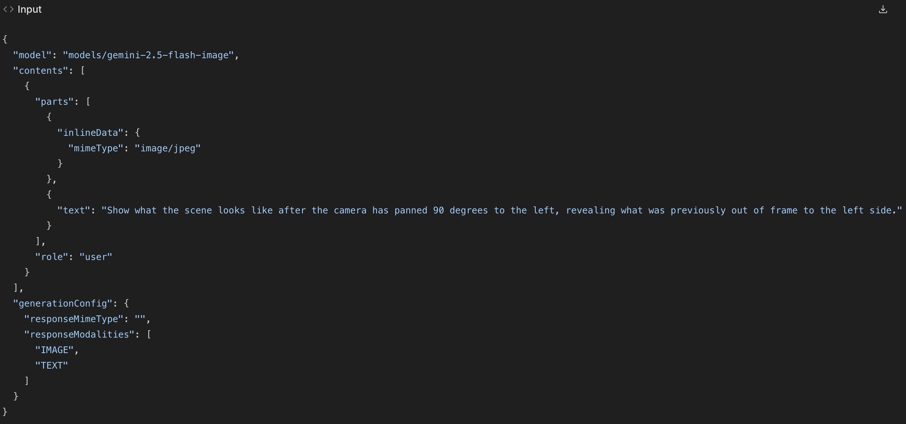
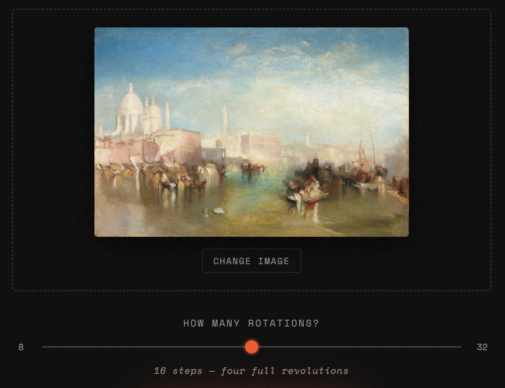
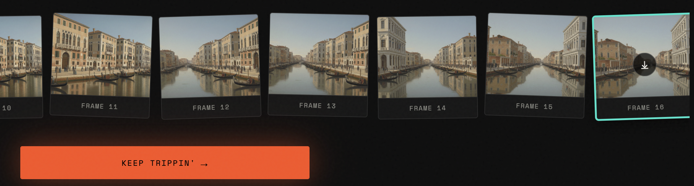
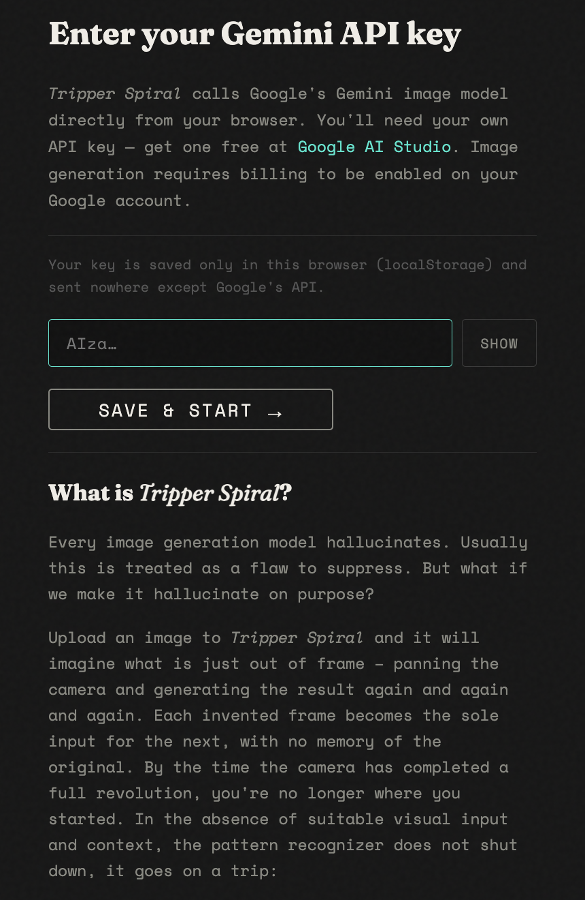

An instrument for exploring the edges of image model bias.
The Premise
Every image generation model hallucinates. When you ask one to show you something it can't see — what's around the corner, what's behind the subject, what's just outside the frame — it invents something. Usually this is treated as a flaw to suppress. Tripper Spiral chooses instead to go deep down that rabbit hole.
The name plays on "trip" as both a journey and a hallucination. The spiral is what happens when you let an AI keep going and going. I suspect that asking an image model to look where it cannot see reveals something about its hidden mechanisms; much like when a human is put in a sensory deprivation tank. In the absence of suitable visual input and context, the pattern recognizer does not shut down, it actually goes into overdrive.
The idea was to set up a chain of image generations where each invented frame becomes the sole input for the next, with no memory of the original. Upload any image. Ask Gemini to show what the scene looks like after the camera pans 90 degrees to the left, revealing what was previously off-screen. Take that output — without looking back at the original — and ask again. And again. By the time the camera has completed a full revolution, you're somewhere else entirely. Like a game of telephone, but visual. Like a camera on a turntable that keeps turning, revealing things that were never there.

Frames generated sequentially and revealed as they arrive — the drift accumulates frame by frame
The Mechanic
The implementation is a single architectural decision on repeat: each API call must receive only the immediately prior frame, in a fresh request, with no conversation history and no reference to the original image. If Gemini remembers where it started, the drift collapses. The hallucination only compounds if each generation is blind to everything except the last thing it invented.
The prompt matters too. In the spec handed to Claude Code, it was marked architecturally significant and flagged never to be altered:
"Show what the scene looks like after the camera has panned 90 degrees to the left, revealing what was previously out of frame to the left side."
That phrasing directs Gemini to invent what was off-screen, not to rotate what was on-screen. The repetition and the specific camera-pan interpretation are the point. The misinterpretations are too.

The prompt — marked architecturally significant in the spec handed to Claude Code
What It Became
What shipped is a hallucination toy with an almost philosophical underpinning: an instrument for exploring what a model believes exists just outside the frame you show it.
After user feedback, three changes shaped the final version:
Wider Range
The original spec ranged from 4 to 16 steps. Users found the image hadn't shifted very much after so few steps. I increased the bottom of the range to 8 and the top to 32 — two full revolutions as the minimum, eight as the maximum. The interesting territory isn't in the first revolution; it's in what happens after the camera has already lost its way.

The upload interface — choose an image, set the number of rotations, start the spiral
Keep Trippin'
The original "Keep Trippin'" reset the app and preloaded the last frame as a new starting image. Users disliked that the previous output was forgotten. The improved version continues the sequence in-place, appending new frames directly to the existing filmstrip. Run it again after a 32-step spiral and you have 64 frames. Run it a third time and you have 96. What started as a finite loop became genuinely open-ended.

Keep Trippin' — appends directly to the existing sequence rather than resetting
Onboarding Modal
First-time visitors now land in an onboarding modal that explains the concept and plays a short demo video before they ever touch the upload interface. The API key prompt is part of the same flow — the model calls Google's Gemini API directly from the browser, requiring your own key.

First-visit onboarding — concept, demo, and API key entry in one flow
Technical Stack
| Concern | Decision |
|---|---|
| Framework | None — vanilla HTML/CSS/JS |
| API | Google Generative Language API v1beta |
| Model | gemini-2.5-flash-image |
| Chain execution | Sequential for-loop with await — never parallel |
| Error strategy | Fatal errors (404, 403, 429) stop the chain; transient failures retry ×2, then show inline |
| Crossfade | Two stacked absolute-positioned <img> elements with CSS opacity transition |
| GIF encoding | gif.js 0.2.0 via CDN; worker loaded via Blob URL to bypass cross-origin restriction |
| API key storage | localStorage — entered on first visit, never committed to source |
| Deployment | Static files; runs from file://, localhost, or any static host |
| Build time | Two sessions |
You'll need a Gemini API key. Free to get at Google AI Studio.
Image generation requires billing to be enabled on your Google account.